핵심 결론
이번 버전은 New Balance를 메인 플랜에서 빼고, Trader Joe's + Harvard/MIT 굿즈 + 보스턴 로컬 소품으로 선물을 끝내는 구성입니다. 회사는 부서원 8명과 동료 10명을 분리하고, 가족은 사람별로 “제대로 챙길 사람 / 적당히 좋은 것 / 가볍게 귀여운 것”으로 나눕니다.
회사동료/가벼운 친구
개당 $3-8을 기준으로 Trader Joe's Furikake, Mushroom & Company, 초콜릿, Boston magnet/keychain. 재고가 있으면 Mini Canvas Tote를 먼저 집습니다.
친한 친구/학생/조카
$20-60/명. Red Sox cap, Harvard/MIT cap, Harvard/MIT 문구 세트, Trader Joe's Mini Canvas/Insulated Tote+스낵 세트가 좋습니다.
가족/아내/정말 친한 친구
$30-120+/명. Harvard/MIT 후드·크루넥, Oohjacquelina 주얼리, MFA 스카프/토트, Taza 초콜릿 묶음, 로컬 향/캔들.
Trader Joe's 매장에서 보는 순서와 상품 캡처
이 섹션만 보고 장바구니에 넣으면 됩니다. Everything But The Bagel은 제외했고, 공식 페이지에서 잘 보이는 상품은 공식 캡처를, 공식 페이지가 없는 상품은 상품 사진이 잘 보이는 리뷰/상품 페이지 캡처를 넣었습니다.


| 순서 | 집을 상품 | 예상가 | 누구에게 | 현장 판단 |
|---|---|---|---|---|
| 1 | Mini Canvas Tote Bag | $2.99 | 부서원, 여동생, 와이프 보조 | 있으면 먼저 확보. 재고 없을 가능성이 높음. 색이 예쁜 것 위주로 8-12개까지. |
| 2 | Mini Insulated Tote Bag | $3.99, 공식 페이지상 지역 재고 변동 | 와이프/친한 가족/여성 가족 | 선물감은 좋지만 부피가 큼. 1-3개만. |
| 3 | Nori Komi Furikake | $2.99 | 부서원/동료/가족 공용 | Everything But The Bagel 대체 1순위. 김+깨라 설명이 쉽고 가볍다. |
| 4 | Mushroom & Company Multipurpose Umami Seasoning Blend | $2.99-3.49 전후 | 요리하는 동료/가족 | 감칠맛 시즈닝. Furikake보다 조금 더 요리하는 사람용. |
| 5 | Dark Chocolate Peanut Butter Cups | 소포장/큰 통 매장 확인 | 동료, 사무실 간식, 친구 | 소포장이 있으면 동료용, 큰 통이면 부서/가족용 공용 간식. |
| 6 | Dark Chocolate Covered Mini Pretzels | $3-5 전후 | 예비 선물, 사무실 간식 | 맛 호불호 적고 나눠 먹기 좋음. 봉지라 캐리어에 넣기 쉬움. |
| 7 | Ultra Moisturizing Hand Cream | $4.99 전후 | 와이프 보조, 누나/여동생 | 토트+초콜릿과 묶으면 선물감이 올라감. 액체류라 용량 확인 후 위탁 권장. |
| 8 | Crunchy Chili Onion | $4.49 | 요리 좋아하는 사람만 | 유리병+오일이라 대량 비추. 위탁수하물에 옷으로 감싸기. |
| 사지 말 것 | Everything But The Bagel Sesame Seasoning Blend | - | - | 한국 반입 금지/검역 리스크로 제외. 매장에서 보여도 담지 않기. |
Harvard/MIT 굿즈: 매장에서 보는 순서와 상품 사진
Harvard/MIT는 “보스턴 다녀온 티”가 가장 확실해서 가족과 가까운 사람용으로 씁니다. 위쪽 사진은 공식 상품 이미지를 내려받아 넣었고, 가격은 공식 페이지 기준이라 매장 재고/색상은 현장에서 다시 확인하세요.


{kind=link}
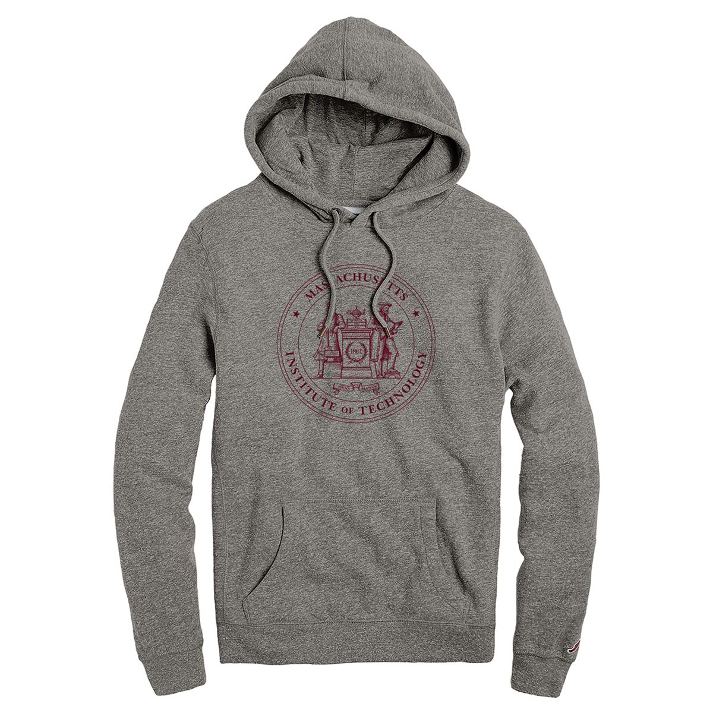
{kind=link}
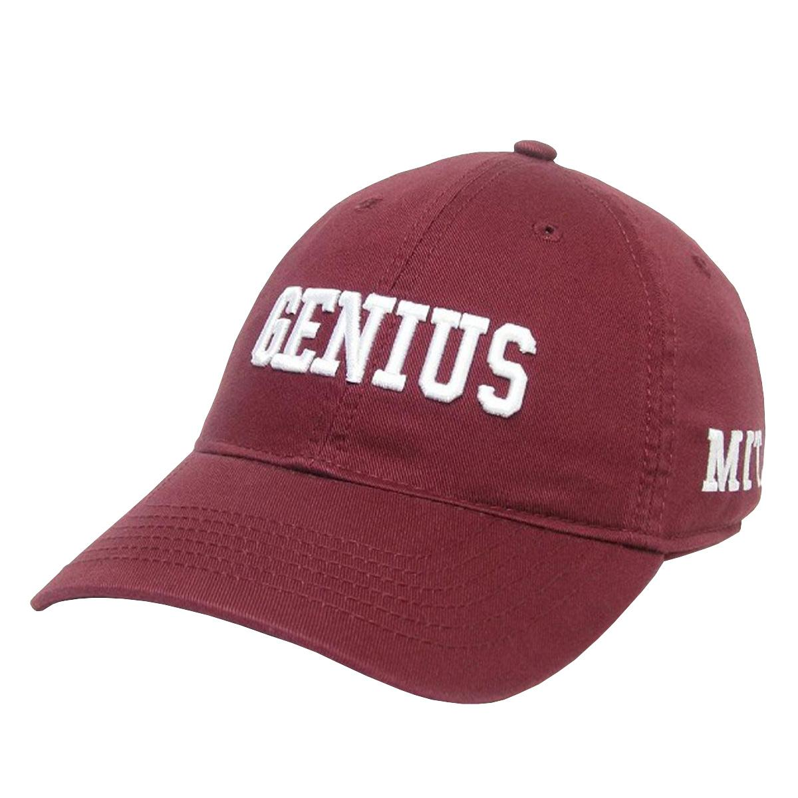

| 순서 | 집을 상품 | 예상가 | 누구에게 | 현장 판단 |
|---|---|---|---|---|
| 1 | Harvard hoodie / crewneck | $45-100 | 엄마, 아빠, 본인, 아주 가까운 가족 | 가장 알아보기 쉽고 선물감이 큼. 사이즈를 모르겠으면 후드보다 crewneck, 색은 navy/gray/crimson 중 무난한 것. |
| 2 | Harvard cap | $28-35 | 아빠, 매형, 남동생, 와이프 커플템 | 옷 사이즈 리스크가 없어서 안전. 로고가 큰 것보다 Classic H/Est. 1636처럼 단정한 디자인이 오래 씀. |
| 3 | Harvard baby onesie / kids tee | $15-35 | 조카 1살, 조카 4살 | 먹는 것보다 기억에 남음. 1살은 onesie/bib, 4살은 kids tee. 사이즈는 한 단계 넉넉하게. |
| 4 | MIT hoodie / sweatshirt | $45-70 | 남동생, IT/공대 취향 가족 | Harvard보다 설명은 덜 쉽지만 취향 맞으면 더 센스 있음. 사이즈 확실할 때만 의류로. |
| 5 | MIT cap / small accessories | $8-35 | 남동생, 동료 중 친한 사람, 예비 선물 | 의류가 애매하면 cap, magnet, sticker, pen, keychain으로 낮추기. 작은 건 부피 대비 효율 좋음. |
| 6 | Harvard/MIT tote, mug, stationery | $5-35 | 누나, 여동생, 학생 가족 | 토트는 실물이 예쁘면 좋고, 머그는 무거워서 1개 이하. 문구류는 조카/동생/예비용으로 좋음. |
레딧/최신 커뮤니티 추가 확인
2026년 5월 4일 기준으로 r/traderjoes, r/boston, r/mbta 쪽 최신 글과 공식 Trader Joe's 신상품 정보를 한 번 더 봤습니다. 결론은 “기존 1순위는 유지하고, 보이면 추가로 집을 것”만 아래에 올리는 게 맞습니다.


Lavender Canvas Tote Bag
$3.99. 공식 상품 목록과 2026년 3월 레딧 토트 재입고/라벤더 토트 글에서 확인. Mini Canvas가 없을 때 와이프 보조, 누나, 여동생, 친한 친구용으로 1-4개만 봅니다. 회사 18명분 대량 구매용은 부피 때문에 비추.
Dewy Skin Serum
$9.99. 2026년 5월 r/traderjoes에서 최근 리뷰가 많이 올라온 신상품. 와이프, 누나, 여동생 중 스킨케어 좋아하는 사람에게만 1-3개. 피부 민감하면 피하고, 1 fl oz라 기내 액체 규정 안에는 들어오지만 위탁이 편합니다.
Garlic Butter Nut Mix / Sweet & Spicy Pecans / PB Cups
$3-7 전후. 레딧 선물 추천 글에서 견과, PB cups, snack mix가 반복 언급됩니다. 부서 공용 간식, 매형, 여동생 남편, 남동생에게 좋고, 견과류 알레르기만 조심하면 실패율이 낮습니다.
Sweet Onion Pretzel Twists / Pinks & Whites Cookies
$3-5 전후. Trader Joe's 2026 봄 신상품/상품 목록에서 확인. 가볍게 먹는 용도로 좋지만 부피가 커서 1-2개만. 개인별 선물보다 부서 테이블에 놓는 간식용입니다.
MBTA Gifts / WardMaps
$6-25+ 전후. r/boston/r/mbta에서 T 로고, 지도, 장난감, 오너먼트가 반복 추천됩니다. 조카 4살, 기차 좋아하는 사람, 디자인 좋아하는 가족에게 좋고, Porter Square 쪽이라 Cambridge 동선이 맞을 때만 들릅니다.
Make Way for Ducklings / Q's Nuts / Taza / Maple Syrup
$8-25 전후. r/boston 선물 글에서 책, 로컬 견과/초콜릿/메이플이 반복 언급됩니다. 조카, 엄마아빠, 누나/여동생, 매형/여동생 남편에게 좋고 Boston Public Market과 Quincy Market에서 마무리하기 편합니다.
쇼핑 동선 + Google Maps 링크
숙소가 Seaport라서 한 번에 다 들르기보다, 5/4 Cambridge, 5/5 Back Bay/Prudential, 5/6 실내+로컬 마무리로 쪼개는 게 덜 지칩니다. 아래 링크는 누르면 Google Maps에서 바로 열리게 해뒀습니다.
Harvard/MIT + Cambridge TJ
Back Bay + Prudential 본진
비 오는 날 마무리
Prudential Tower 전망대는 “View Boston”으로 검색
예전 이름인 Skywalk Observatory로 찾으면 헷갈립니다. 지금 갈 곳은 Prudential Center 800 Boylston St 안의 View Boston이고, 5/5 Back Bay/Prudential 쇼핑을 끝낸 뒤 날씨가 맑을 때만 넣는 옵션입니다.
{kind=link}
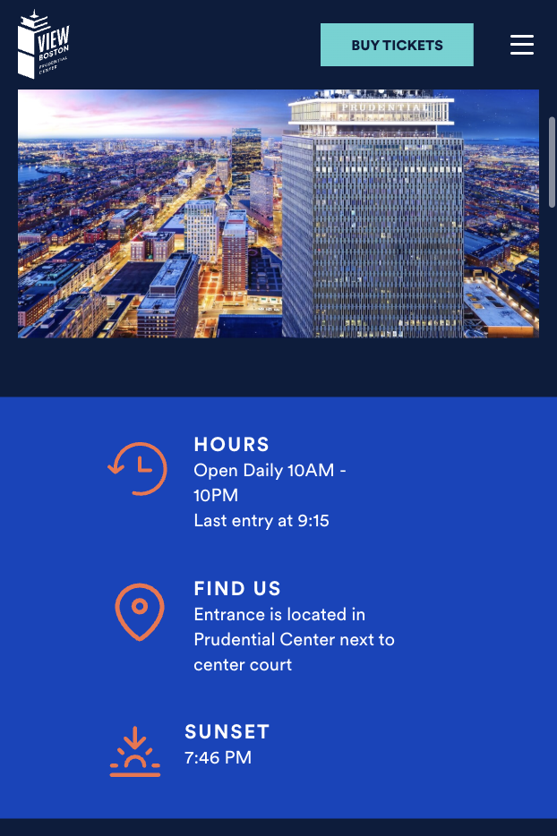
{kind=link}
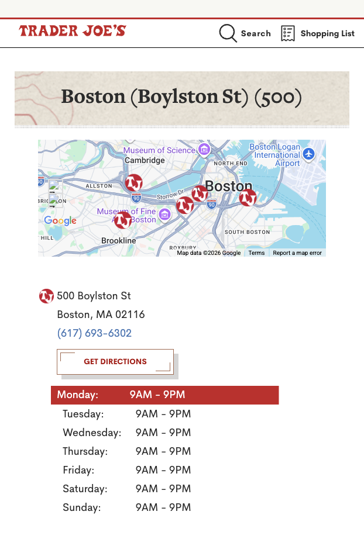
| 판단 | 언제 갈지 | 왜 좋은지 | 주의 |
|---|---|---|---|
| 가도 좋음 | 5/5 화 저녁, Trader Joe's 500 Boylston + CVS/Prudential 쇼핑 후 | Boston Common, Charles River, Fenway, Seaport를 한 번에 내려다볼 수 있어 사진 없는 첫날 산책의 아쉬움을 만회하기 좋음. | 맑은 날/해질녘 우선. 비·안개·구름 많으면 돈 대비 만족도가 떨어짐. |
| 보류 | 5/6 수 비가 오거나 흐리면 | 실내라 갈 수는 있지만 전망대는 시야가 핵심이라 비 오는 날은 MFA/Gardner/Boston Public Market이 더 낫습니다. | 티켓 가격은 날짜/시간대별 변동 가능. 공식 Buy Tickets에서 확인. |
CVS/pharmacy에서 살만한 보충 선물
CVS는 메인 선물 가게가 아니라 마지막 보충용입니다. 먹을 것/시즈닝은 Trader Joe's에서 끝내고, CVS에서는 립밤·보습·치아미백·미국 사탕처럼 “있으면 실용적인 것”만 짧게 봅니다.

{kind=link}
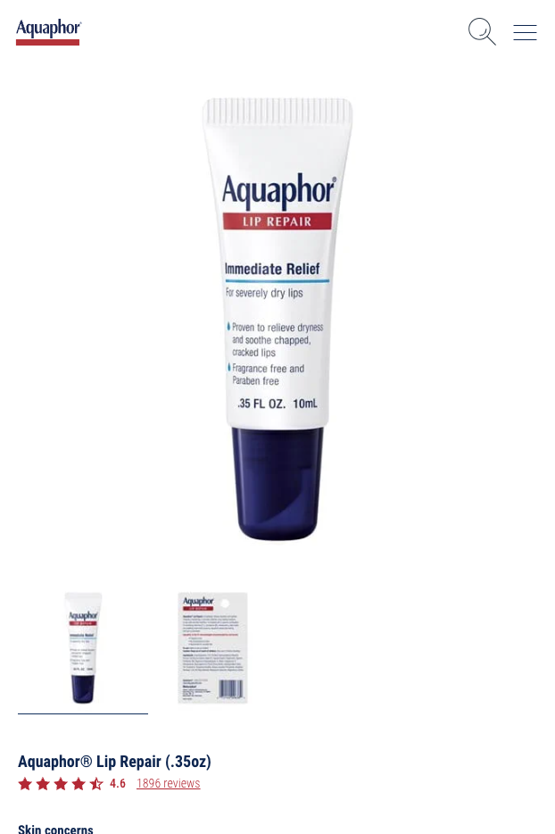


| 상품 | 예상가 | 누구에게 | 언제/어디서 | 주의 |
|---|---|---|---|---|
| Burt's Bees Beeswax Lip Balm / multipack | $4-14 | 동료 예비, 가족 공용, 여동생/누나 보조 | 5/5 Prudential CVS 또는 587 Boylston CVS | 향/맛이 있는 버전보다 오리지널/무향 계열이 안전. 단품보다 2-4팩이면 나누기 좋음. |
| Aquaphor Lip Repair / Healing Ointment travel size | $6-10 | 엄마아빠, 와이프, 누나/여동생 | 5/5 CVS, 5/6 숙소 근처 CVS 보충 | 약 선물 느낌보다 보습템 느낌으로. 피부 민감한 사람에게는 오히려 무난할 수 있음. |
| CeraVe Daily Moisturizing Lotion / travel size | $8-16 | 와이프 보조, 누나/여동생, 본인 | 5/5 CVS/Prudential | 한국에도 있는 브랜드라 “보스턴 선물” 느낌은 약함. 빠진 선물 보충용으로만. |
| Crest 3D Whitestrips | $35-80+ | 와이프 또는 본인용, 정말 필요한 성인만 | 5/5 CVS/Prudential | 민감성/치아 시림 이슈가 있어 아무에게나 뿌리는 선물은 비추. 고가라 한 명만. |
| Altoids, Tic Tac, Reese's, M&M's seasonal pack | $2-8 | 회사 예비/조카 제외 성인 간식 | 마지막 날 전날 아무 CVS | 초콜릿은 녹을 수 있으니 캐리어 안쪽. 조카에게는 연령/알레르기 확인 전까지 사탕류 비추. |
실제 받을 사람 기준 선물 배분안
총 대상은 회사 18명과 가족/와이프 11명입니다. 예산과 캐리어를 생각하면, 회사는 Trader Joe's 중심으로 깔끔하게 끝내고 가족은 Harvard/MIT 굿즈와 로컬 선물을 섞는 게 제일 낫습니다.
회사: 부서원 8명과 동료 10명
| 대상 | 등급 | 추천 구성 | 예상가/명 | 수량 메모 |
|---|---|---|---|---|
| 부서원 8명 | 꽤 쓸만한 세트 | Mini Canvas Tote가 있으면 Mini Canvas Tote + Nori Komi Furikake 또는 Mushroom & Company + 초콜릿 1개. 없으면 Reusable Grocery Bag + Furikake + Peanut Butter Cups. | $7-12 | 8세트. 같이 일하는 사람들은 단품보다 작은 세트가 훨씬 덜 성의 없어 보임. |
| 동료 10명 | 저렴이 단품 | Nori Komi Furikake / Mushroom & Company / Dark Chocolate Peanut Butter Cups / Dark Chocolate Covered Mini Pretzels 중 1개씩. | $2-4 | 10개. “미국에서 유명한 Trader Joe's 선물”이라고 말하기 쉬운 것 위주. |
| 예비 3-5명 | 비상용 | Dark Chocolate Covered Mini Pretzels, 초콜릿 견과, Boston magnet/keychain. | $3-8 | 귀국 후 갑자기 생각나는 사람 대비. 초콜릿 봉지는 사무실 공용 간식으로도 전환 가능. |
가족/와이프: 사람별 추천
| 대상 | 등급 | 추천 선물 | 예상가 | 이유/주의 |
|---|---|---|---|---|
| 와이프 | 제일 챙김 | Oohjacquelina 주얼리 또는 MFA scarf/tote + Mini Canvas/Insulated Tote + Hand Cream/초콜릿 | $45-120 | “여행 중 고른 것” 느낌이 가장 중요. 가방만 주지 말고 주얼리/스카프/향 중 하나를 메인으로. |
| 엄마 | 제대로 | Harvard/MIT 크루넥 또는 MFA scarf + Taza Chocolate | $45-90 | 입는 선물이 부담되면 스카프/토트가 안전. 사이즈 모르면 의류보다 소품. |
| 아빠 | 제대로 | Harvard cap/crewneck 또는 Red Sox cap + Curio Spice/초콜릿 | $35-85 | 로고가 큼직한 후드보다 cap/크루넥이 더 오래 쓰기 좋을 수 있음. |
| 누나 | 꽤 쓸만함 | MFA tote 또는 Trader Joe's Mini Canvas/Insulated Tote + Hand Cream + 초콜릿 | $15-40 | 실사용 가능한 가방+작은 화장품/간식 조합이 안정적. |
| 남동생 | 꽤 쓸만함 | MIT cap/tee 또는 Harvard/MIT 문구·키링 + Trader Joe's 시즈닝/초콜릿 | $20-45 | 학생/IT/공대 감성이 있으면 MIT가 더 센스 있음. 아니면 Harvard가 설명 쉬움. |
| 여동생 2명 | 꽤 쓸만함 | Mini Canvas Tote가 있으면 각 1개 + Hand Cream/Peanut Butter Cups. 없으면 MFA tote/Harvard canvas bag 중 예쁜 것. | $10-35/명 | 둘이 너무 차이 나지 않게 비슷한 구성으로 맞추기. |
| 매형 | 적당히 | Red Sox cap 또는 Harvard/MIT cap + Mushroom & Company | $30-50 | 사이즈 없는 cap이 안전. 취향 모르면 시즈닝/초콜릿 세트로 낮춰도 됨. |
| 여동생 남편(매제/매부) | 적당히 | Red Sox cap 또는 Harvard/MIT cap + Mushroom & Company/초콜릿. 가볍게 가려면 Garlic Butter Nut Mix나 Sweet & Spicy Pecans. | $12-50 | 매형과 비슷하게 남성/무난 선물로 잡기. 취향을 모르면 cap보다 Trader Joe's 간식+시즈닝 세트가 안전. |
| 조카 4살 | 귀여운 것 | Harvard/MIT kids tee, Make Way for Ducklings 책/플러시, MBTA 장난감/작은 기차 | $12-35 | 식품보다 아이용 굿즈가 기억에 남음. 작은 부품 있는 장난감은 피하고, 책은 부피 대비 선물감 좋음. |
| 조카 1살 | 귀여운 것 | Harvard/MIT baby onesie/bib, 부드러운 plush, board book | $12-30 | 먹는 선물보다 옷/턱받이/보드북. 사이즈는 넉넉하게. |
한 번에 사야 할 수량 체크리스트
| 품목 | 목표 수량 | 우선 구매처 | 대체 |
|---|---|---|---|
| Trader Joe's 시즈닝류 | 18-24개 | 500 Boylston 또는 748 Memorial | Furikake와 Mushroom & Company만 섞기. Everything But The Bagel은 제외. |
| Trader Joe's 초콜릿/간식 | 12-18개 | 500 Boylston 또는 748 Memorial | Peanut Butter Cups, Mini Pretzels, 초콜릿 견과 |
| Mini Canvas Tote | 있으면 8-12개 | Trader Joe's 큰 지점 | 없으면 Reusable Grocery Bag 10-15개 |
| Harvard/MIT 의류 | 2-4개 | Harvard Shop, MIT Coop | 사이즈 애매하면 cap/tote로 전환 |
| Harvard/MIT cap·문구·키링 | 6-10개 | Harvard Shop, MIT Coop | 조카/동생/예비 선물로 분산 |
| 와이프/엄마용 로컬 선물 | 2-4개 | MFA Shop, Boston Public Market | Oohjacquelina, MFA scarf/tote, Lifebloom, Taza |
보스턴 Trader Joe's는 어느 지점으로 가야 하나
오늘 간 44 Thomson Place, Fort Point Seaport는 숙소에서는 최고지만, 선물 쇼핑 본진으로는 작습니다. 에코백/시즈닝/초콜릿을 제대로 보려면 아래 순서로 움직이는 게 낫습니다.
{kind=link}
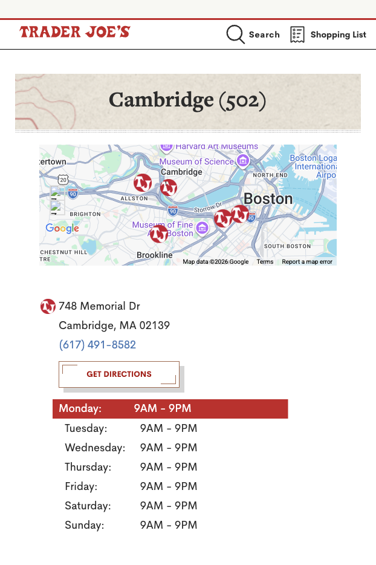
{kind=link}
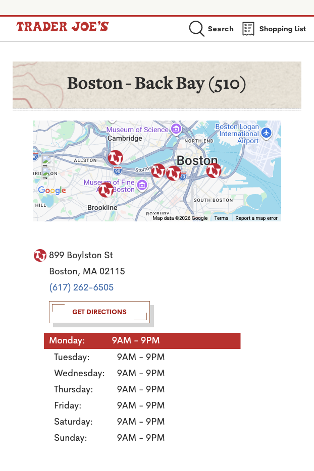
{kind=link}
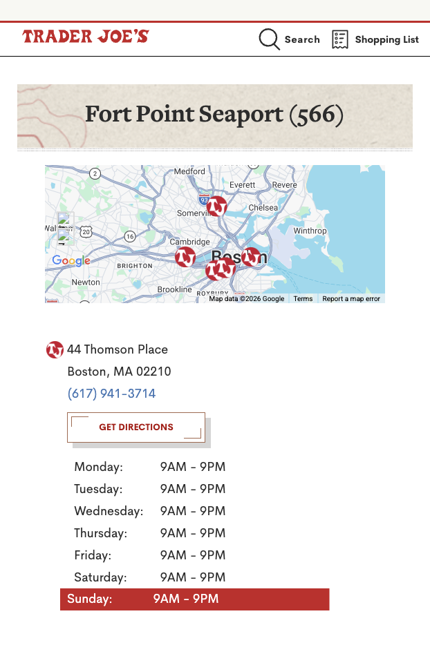
| 우선순위 | 지점 | 주소 | 언제 묶을지 | 판단 |
|---|---|---|---|---|
| 1 | Boston (Boylston St) #500 | 500 Boylston St, Boston, MA 02116 | 5/5 Boston Public Library, Copley, Newbury, Prudential 동선 | 가장 추천. Back Bay 중심이고, 899 Boylston의 아주 작은 지점 문제를 피할 수 있는 새/큰 후보. 선물 쇼핑은 여기서 먼저 시도. |
| 2 | Cambridge #502 | 748 Memorial Dr, Cambridge, MA 02139 | 5/4 MIT/Kendall 또는 Harvard/MIT 끝난 뒤 | Cambridge 일정에 붙이기 좋음. Fort Point보다 본격 장보기 느낌으로 기대. Harvard Square에서 바로는 멀고 MIT 쪽에서 붙이는 게 낫다. |
| 3 | Somerville #560 | 145 Middlesex Ave, Somerville, MA 02145 | 정말 토트/간식 재고를 더 보고 싶을 때 별도 이동 | Assembly Row 쪽이라 매장형 쇼핑에는 좋지만 Hyatt Seaport 기준 일부러 가야 함. 다른 일정과 안 맞으면 무리하지 말 것. |
| 4 | Brookline #501 | 1317 Beacon St, Brookline, MA 02446 | Fenway 이후 Coolidge Corner 쪽으로 빠질 때만 | 나쁘지 않지만 이번 일정 핵심 동선에서는 살짝 벗어남. Green Line C를 타게 되는 날이면 후보. |
| 보충용 | Fort Point Seaport #566 | 44 Thomson Place, Boston, MA 02210 | 숙소 복귀 후 빠진 수량 채우기 | 오늘 본 것처럼 작음. 생수, 간식, 초콜릿, 일부 시즈닝 보충용. Mini Canvas Tote나 다양한 선물 재고 기대는 낮게. |
| 비추 | Boston - Back Bay #510 | 899 Boylston St, Boston, MA 02115 | 지나가다 아주 급할 때만 | 위치는 좋지만 “작은 Back Bay 지점”으로 유명. 품목 적은 문제를 해결하려는 목적이면 500 Boylston으로 가는 게 낫다. |
Trader Joe's 에코백/토트: 현장에서 뭘 사야 하나
정답은 Mini Canvas Tote Bag이 보이면 먼저 집기입니다. 다만 한정/계절 상품이라 Fort Point 매장에 없을 수 있으니, 아래 순서대로 대체하면 됩니다.
| 우선순위 | 정확한 상품명 | 예상가 | 누구에게 | 현장 판단 |
|---|---|---|---|---|
| 1 | Trader Joe's Mini Canvas Tote Bag | $2.99 | 아내, 친한 친구, 회사동료 중 센스 있게 챙길 사람 | 있으면 2-6개. 색은 파스텔/네이비/그린/레드/옐로우 계열 중 실물이 예쁜 것. 품절 가능성이 높아 “못 살 수도 있음” 전제. |
| 2 | Trader Joe's Mini Insulated Tote Bag | $3.99 | 아내, 친한 친구, 도시락/피크닉 쓰는 사람 | 색이 예쁘면 1-3개. 각 잡힌 보냉백이라 선물감은 좋지만 부피가 있어 대량 구매는 비추. |
| 3 | Trader Joe's Canvas Tote Bag / Large Canvas Tote | $3.99 전후 | 가족, 본인, 장바구니 잘 쓰는 사람 | Mini Canvas가 없을 때 실사용 대체품. 크고 튼튼하지만 “귀여운 유행템” 느낌은 미니보다 약함. |
| 4 | Trader Joe's Citrus Jute Bag | $3.99 | 아내/친구 중 여름 느낌 좋아하는 사람 | 레몬/라임 프린트가 예쁘면 1-2개. 마 소재라 여행지 느낌이 있고 가격 대비 선물감 좋음. |
| 5 | Trader Joe's Reusable Grocery Bag | $0.99-1.99 | 회사동료 대량, 급히 수량 맞출 때 | 얇고 가벼운 백업. 안에 초콜릿/시즈닝 하나 넣으면 “봉투”가 아니라 작은 선물 세트처럼 보임. |
| 6 | Trader Joe's Supernatural Paper Tote | $8.99 | 디자인 취향 맞는 가까운 사람 | 가격이 올라가니 실물이 정말 마음에 들 때만. 소재감이 특이해서 호불호 확인 필요. |
토트 안에 넣어서 완성하는 조합
| 대상 | 조합 | 예상가 | 왜 괜찮나 |
|---|---|---|---|
| 회사동료 | Reusable Grocery Bag + Nori Komi Furikake 또는 Mushroom & Company | $4-7 | 가볍고 깨질 위험이 낮음. 여러 명에게 돌리기 좋음. Everything But The Bagel은 제외. |
| 친한 친구 | Mini Canvas Tote + Dark Chocolate Peanut Butter Cups + Dark Chocolate Covered Mini Pretzels | $8-14 | 요즘 느낌 나는 토트에 바로 먹을 간식을 넣는 구성이라 선물처럼 보임. |
| 요리하는 사람 | Canvas Tote + Mushroom & Company Umami + Nori Komi Furikake + Crunchy Chili Onion | $12-16 | 한국 음식에도 쓰기 쉬운 감칠맛/김깨/칠리 조합. Chili Onion은 유리병이라 위탁. |
| 아내/연인 | Mini Insulated Tote 또는 Mini Canvas Tote + Ultra Moisturizing Hand Cream + 초콜릿 1개 | $10-16 | 가방만 주는 것보다 훨씬 성의 있어 보이고, 핸드크림은 가격 대비 선물감이 좋음. |
5/4-5/7 일정
구매 우선순위
| 순위 | 살 것 | 왜 먼저인가 | 날짜 |
|---|---|---|---|
| 1 | Harvard/MIT 의류·모자 | 사이즈/색상이 빠질 수 있고, Cambridge 동선은 5/4가 가장 깔끔함. | 5/4 |
| 2 | Trader Joe's 대량 선물 | 회사 18명분은 수량이 중요. Fort Point는 작으니 500 Boylston 또는 748 Memorial에서 본 쇼핑. | 5/4, 5/5 |
| 3 | CVS 보충 선물 | Burt's Bees/Aquaphor/CeraVe/Crest처럼 빠진 사람을 채우는 실용템. 메인은 아니고 보조. | 5/5 |
| 4 | View Boston | 맑은 저녁이면 Prudential 쇼핑 후 바로 붙이기 좋음. 흐리면 생략. | 5/5 |
| 5 | Red Sox cap | 아빠/매형/남동생 후보. 보스턴 느낌이 확실하고 사이즈 리스크가 작음. | 5/5 |
| 6 | Boston Public Market / MFA 로컬 선물 | 와이프/엄마/누나/여동생용으로 성의 있어 보이는 주얼리, 향, 스카프, 초콜릿을 마무리. | 5/6 |
| 7 | 예비 선물 | 갑자기 빠진 사람 대비. 초콜릿/마그넷/키링은 마지막에 수량 조절. | 5/6 |
받는 사람별 “딱 사면 되는” 리스트
회사동료에게 돌릴 것
| 상품 | 예상가 | 권장 수량 | 왜 좋나 | 사는 곳 |
|---|---|---|---|---|
| Trader Joe's Nori Komi Furikake | $2.99 | 6-10개 | 김+깨 조합이라 한국 입맛에 무난. 가볍고 안 깨져서 1인 1개 돌리기 좋음. | Trader Joe's Fort Point |
| Trader Joe's Mushroom & Company Multipurpose Umami Seasoning Blend | $2.99 전후 | 3-6개 | 감칠맛 시즈닝이라 한국 음식에도 쓰기 좋음. 요리하는 동료에게 Furikake보다 한 단계 센스 있음. | Trader Joe's |
| Trader Joe's Dark Chocolate Peanut Butter Cups | $1.29 소포장 기준 | 6-12개 | 한국 후기에서 가격 대비 맛 좋은 단짠 초콜릿으로 언급. 개별 소포장이면 돌리기 편함. | Trader Joe's |
| Dark Chocolate Covered Mini Pretzels / Dark Chocolate Covered Cashews | $3-5 전후 | 4-8봉 | 사람이 많으면 개별 선물보다 사무실 간식으로 놓기 좋음. | Trader Joe's |
| Trader Joe's Crunchy Chili Onion | $4.49 | 2-4병 | 요리 좋아하는 동료에게만. 유리병+오일이라 위탁수하물에 넣기. | Trader Joe's |
| Mini Canvas Tote Bag / Reusable Grocery Bag | $0.99-2.99 | 3-8개 | Mini Canvas가 있으면 바로 사고, 없으면 리유저블백을 포장재처럼 써서 시즈닝/초콜릿을 넣기. | Trader Joe's |
| Boston magnet/keychain | $5-8 | 5-8개 | 갑자기 줄 사람이 늘었을 때 마지막 안전빵. | Quincy Market, Fenway, 공항 |
가족용
| 상품 | 예상가 | 권장 | 왜 좋나 | 사는 곳 |
|---|---|---|---|---|
| Harvard hooded/crest/arc sweatshirt | $48-85 | 1-3개 | 보스턴 선물 중 알아보기 쉽고 오래 씀. 부모님/형제/조카 모두 설명이 쉬움. | 5/4 Harvard Shop |
| MIT hoodie/sweatshirt | $45-90 | 1-2개 | 공대/IT/학생 가족에게 Harvard보다 더 센스 있음. 사이즈 있는 상품이라 5/4 먼저 해결. | 5/4 MIT Coop |
| Taza Chocolate Disc | $6.99+ | 4-8개 | Somerville 로컬 초콜릿. 맛 여러 개를 묶으면 성의 있어 보임. | Taza, Boston Public Market 재고 |
| Curio Spice | $9.50-12 | 2-3개 | 요리하는 가족에게 실용적. 병이 작고 선물감 있음. | 5/6 Boston Public Market |
아내/연인/가까운 사람
| 상품 | 예상가 | 권장 | 왜 좋나 | 사는 곳 |
|---|---|---|---|---|
| Oohjacquelina custom jewelry | $25-90+ | 1개 | 아내/연인용 1순위. 여행 중 직접 골랐다는 느낌이 강함. 이니셜/참 조합이면 더 좋음. | 5/6 Boston Public Market |
| Lifebloom perfume/candle | $8-30+ | 1-2개 | 향 취향을 알면 좋음. 향수는 100ml 기내 제한, 캔들은 위탁이 편함. | 5/6 Boston Public Market |
| MFA tote/scarf | $9.95-52 | 1개 | 미술관 좋아하는 사람에게 세련된 보스턴 선물. 스카프는 가격대가 올라가지만 선물감 좋음. | 5/6 MFA Shop |
| Trader Joe's Mini Canvas/Insulated Tote + Ultra Moisturizing Hand Cream | $8-12 전후 | 1세트 | 가벼운 추가 선물로 좋음. Mini Canvas가 없으면 Mini Insulated나 MFA tote로 대체. | Trader Joe's |
| CVS Burt's Bees/Aquaphor/CeraVe 보습 세트 | $10-25 | 1세트 | 보스턴 감성 선물은 아니지만 실용 보충용. Trader Joe's 토트 안에 같이 넣으면 성의 있어 보임. | 5/5 Prudential CVS |
| Harvard/MIT/Red Sox cap | $30-50 | 1-2개 | 커플템이나 데일리 소품으로 좋음. 옷 사이즈를 모르면 cap이 안전. | Harvard Shop, MIT Coop, Fenway |
친한 친구/학생/조카
| 상품 | 예상가 | 권장 | 왜 좋나 | 사는 곳 |
|---|---|---|---|---|
| Harvard/MIT 펜, 파일, 배지, 노트 | $5-20 | 여러 개 | 학생/동생용 무난템. 부피 작고 여러 명에게 나누기 좋음. | Harvard Shop / MIT Coop |
| Red Sox '47 cap | $35-50 | 1개 | 보스턴 스포츠 대표. 야구 모르는 사람도 B 로고는 예쁨. | Fenway Team Store |
| Trader Joe's Mini Canvas Tote + Dark Chocolate Peanut Butter Cups + Hand Cream | $8-15 | 1세트 | 가벼운 친구에게는 토트 안에 과자/핸드크림을 넣으면 포장까지 해결. Mini Canvas가 없으면 Reusable Grocery Bag으로 낮춰도 됨. | Trader Joe's |
수하물·한국 반입·현실 체크
사면 좋음
- Harvard/MIT 후드·크루넥·cap
- Red Sox cap
- Trader Joe's Mini Canvas Tote, Furikake, Mushroom & Company, 초콜릿류
- Curio Spice, Taza Chocolate, MFA tote/scarf
- Oohjacquelina jewelry, Lifebloom candle/perfume
- CVS Burt's Bees, Aquaphor, CeraVe: 메인 선물 말고 보충용
굳이 안 사도 됨
- 무거운 머그 여러 개
- 흔한 Boston 로고 티셔츠 대량 구매
- 냉동 Trader Joe's, 치즈/유제품
- 유리병 소스 대량
- New Balance 신발: 이번엔 동선/부피/사이즈 리스크 때문에 제외
- 사이즈 모르는 신발/의류
- Everything But The Bagel Sesame Seasoning Blend: 한국 반입 금지/검역 리스크로 제외
- Crest Whitestrips 대량 구매: 민감성/치아 시림 때문에 가족 1명 또는 본인용만
- 신발 박스는 부피가 큽니다. 선물용 1켤레는 박스 보존, 본인용/가족용은 박스를 버리고 신발 안에 양말·초콜릿을 넣으면 공간이 살아납니다.
- 100ml 초과 액체·오일·시럽·스프레드는 위탁수하물. 유리병은 옷으로 감싸세요.
- 초콜릿/과자/밀봉 견과류는 비교적 쉽지만, 식품은 신고 기준을 보수적으로 보는 게 안전합니다.
근거 캡처
공식 영업시간/가격 페이지와 한국 여행자 후기, 상품 페이지 캡처를 함께 넣었습니다. 이미지는 눌러서 크게 볼 수 있습니다.
Harvard/MIT/한국 후기 캡처
{kind=link}
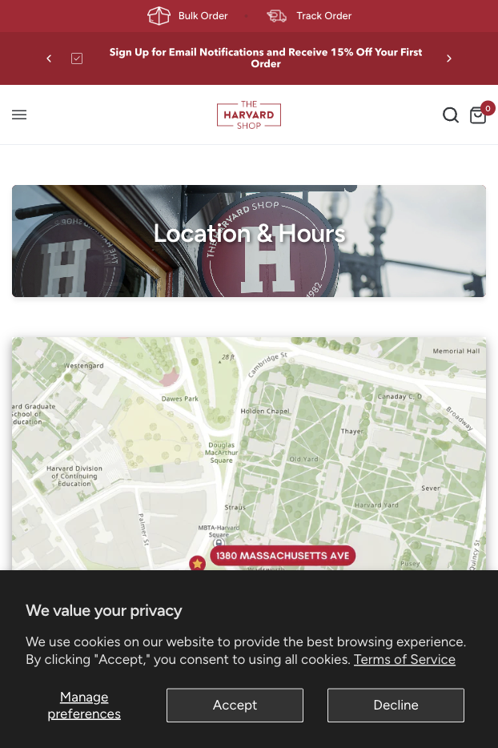
{kind=link}
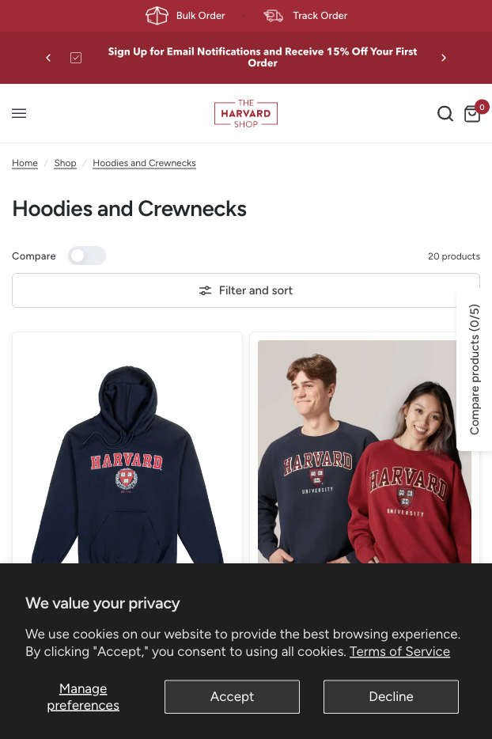
{kind=link}
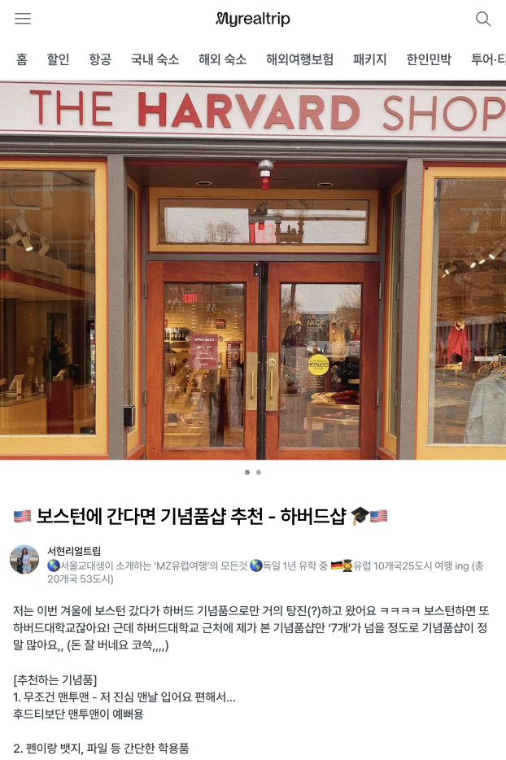
{kind=link}
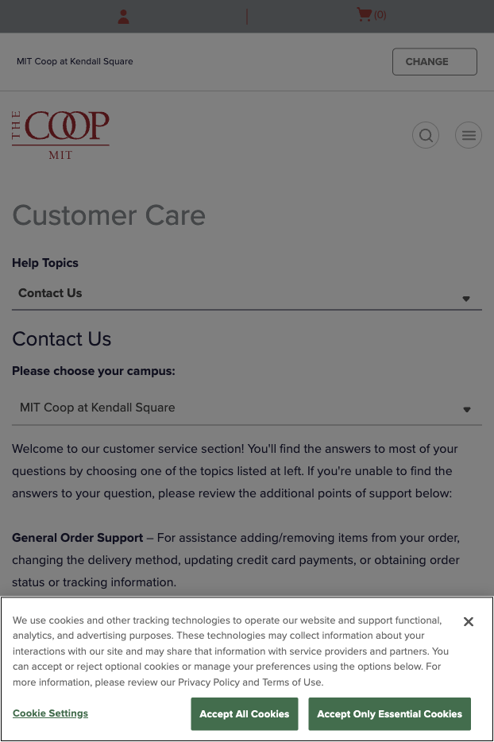
{kind=link}
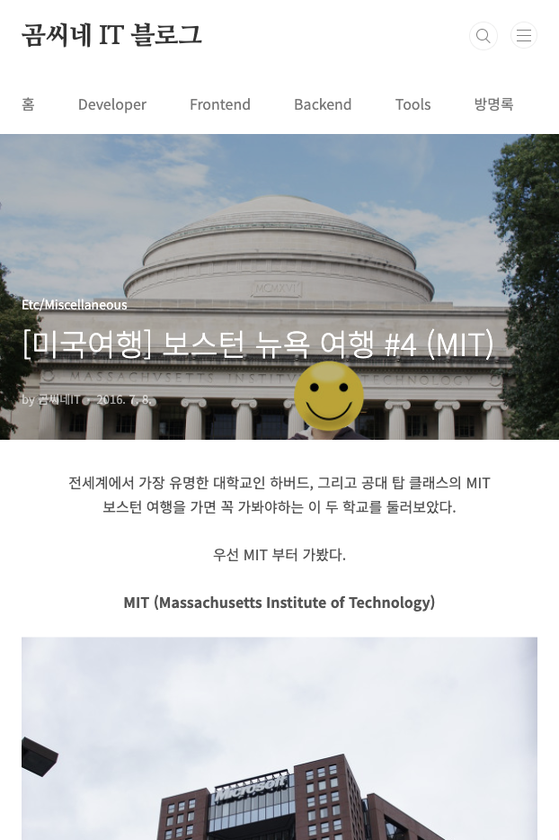
Trader Joe's / 로컬 선물 / 박물관 캡처

{kind=link}
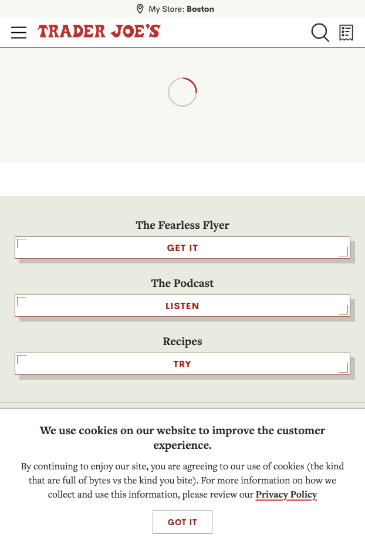
{kind=link}
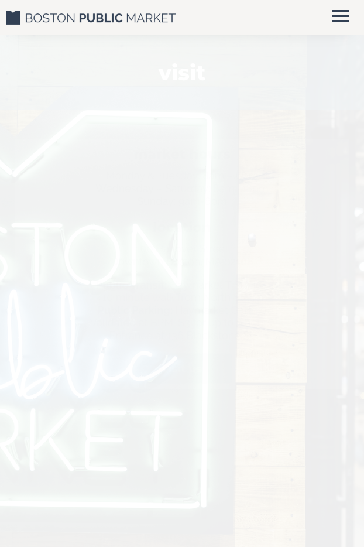
{kind=link}
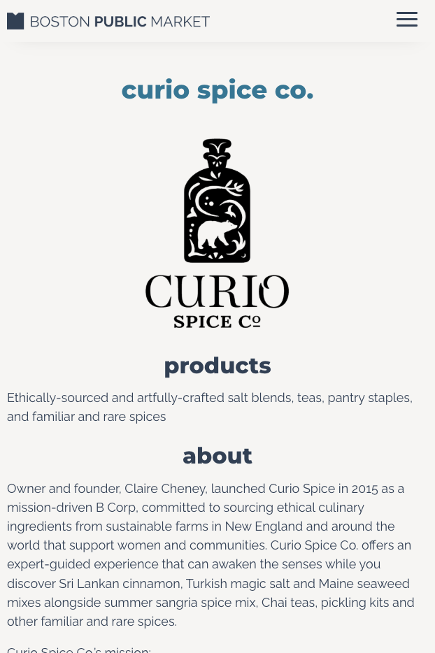
{kind=link}
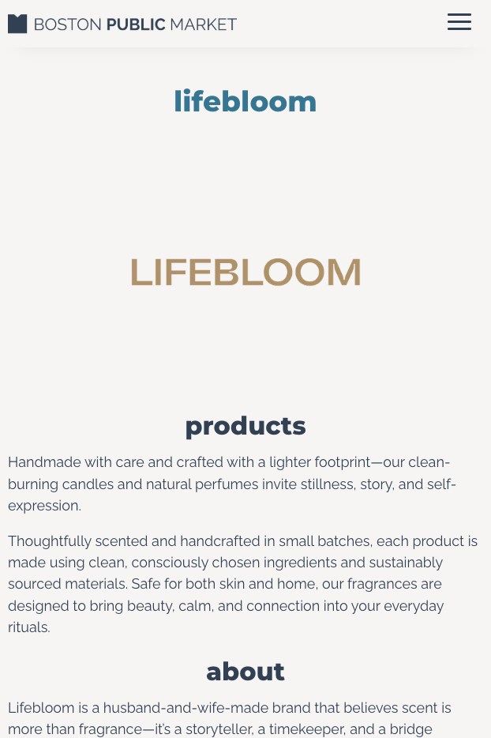
{kind=link}
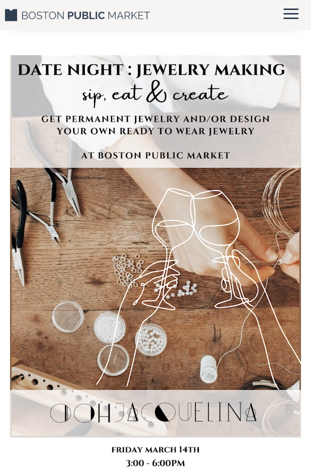

커뮤니티픽 / View Boston / CVS 보충 캡처
후기 근거를 다시 검증한 결론
정확히 말하면, 초안은 “2025-2026초 한국인 후기만”으로 만든 문서가 아니라 공식 정보 + 한국어 후기 + 한국인 쇼핑 트렌드 글을 섞어 만든 상태였습니다. 그래서 아래처럼 근거 등급을 분리했습니다.
| 근거 구분 | 확인한 자료 | 문서에 반영한 방식 | 신뢰도 |
|---|---|---|---|
| 보스턴 실제 후기 | 2025.02.02 게시 보스턴 2일차 후기: Fenway, Newbury, Boston Public Library, Copley, Public Garden. 2025.05.06 게시 3일차 후기: Duck Tour, Boston Public Market. | 5/5 도심 산책, Fenway, BPL, Public Garden, 5/6 Boston Public Market 동선의 한국어 후기 근거로 사용. | 높음. 다만 글 안에 7월 방문 언급이 있어 “2025 실제 방문”이라고 단정하지 않고 “2025 게시 한국어 후기”로 표기. |
| Harvard/MIT 기념품 | 2024.09.23 게시 실제 후기: Harvard Coop에서 Harvard 후드/모자 구매, MIT Coop에서 후드/티셔츠 구매. 2025.05.18 게시 하버드·MIT 캠퍼스/기념품샵 가이드. | Harvard/MIT 의류·모자를 가족/친한친구용 프리미엄 선물로 둠. | 중간-높음. 실제 구매 후기는 2024 게시라 연도 조건에는 완전히 맞지 않지만, 2025 가이드와 공식 가격으로 보강. |
| Trader Joe's 선물 | 2025.03.24 한국어 글에서 트레이더조 가방 종류/가격을 상세 정리. 2025.07 글에서 에코백, Mushroom & Company, Dark Chocolate Peanut Butter Cups, Ultra Moisturizing Hand Cream 확인. 2025.09 국내 기사와 2026.01 한국어 글에서 Mini Canvas Tote 품절/리셀 열풍 확인. | 회사동료/가벼운 친구용은 Trader Joe's 중심. 에코백은 “Mini Canvas 있으면 즉시 구매, 없으면 대체 토트”로 우선순위화. | 높음. Boston 특정 후기는 아니지만 “한국인이 미국 여행 선물로 실제 찾는 품목” 근거로는 강함. |
| Reddit/최신 커뮤니티 | 2026.03 Trader Joe's 토트 재입고/라벤더 토트 글, 2026.05 Dewy Skin Serum 리뷰, 2025-2026 r/boston 보스턴 선물 글을 추가 확인. | Lavender Canvas Tote, Dewy Skin Serum, Garlic Butter Nut Mix, MBTA Gifts, Make Way for Ducklings, Q's Nuts/Taza를 “보이면 추가” 후보로 반영. | 중간-높음. 레딧은 개인 후기라 공식 가격/재고 근거는 아니지만 최신 취향과 현장감 파악에는 유용. |
후기/커뮤니티 링크맵
아래 링크는 “그냥 출처”가 아니라, 들어가서 어떤 사진과 문장을 보면 되는지까지 적어둔 체크맵입니다. Trader Joe's는 Boston 전용 후기뿐 아니라 한국 여행 선물 트렌드와 Reddit 최신 반응을 함께 봤고, 최종 구매는 보스턴 매장 재고를 직접 확인하는 전제로 봐야 합니다.
| 열어볼 링크 | 확인할 것 | 문서에 반영한 판단 | 근거 등급 |
|---|---|---|---|
| 2025.03.24 Trader Joe's 가방 종류/가격 리뷰 | Mini Canvas Tote $2.99, Large Canvas Tote $3.99, Mini Insulated Tote $3.99, Citrus Jute Bag $3.99, Supernatural Paper Tote $8.99, Reusable Grocery Bag $0.99. | 에코백 섹션의 구매 순서와 예상가를 이 글 기준으로 세분화. | 높음 |
| 2025.09 조선일보 Trader Joe's 에코백 유행 기사 | 한국에서도 Mini Canvas Tote가 “미국 여행 전리품”처럼 소비되고, 여행자가 주변에 돌렸을 때 반응이 좋았다는 흐름. | Mini Canvas Tote를 동료/친구용 최우선 토트로 올림. 단, 품절 가능성을 크게 표시. | 높음 |
| 2026.01 Mini Canvas Tote 리셀/품절 대란 정리 | 2026년 초에도 $2.99 미니 캔버스 토트 품절/리셀 이슈가 계속 언급됨. | “있으면 산다, 없으면 대체품으로 간다”는 재고 대응 룰을 추가. | 중간 |
| 2025.03 Mini Insulated Totes 구매 후기 | 보냉백 출시일 줄, 1인 2개 제한, 이베이 리셀 이야기가 있는 실제 구매 후기. | Mini Insulated Tote는 아내/친한친구용 2순위로 설정. 많이 사면 부피가 커진다는 주의 추가. | 높음 |
| 2025.07 Trader Joe's 쇼핑리스트 후기 | Mushroom & Company Umami $2.99, Dark Chocolate Peanut Butter Cups $1.29, Ultra Moisturizing Hand Cream $4.99, 에코백 언급. | 회사동료/친구용 상품명을 더 구체화하고, 핸드크림을 여성 지인/아내 보조 선물로 추가. | 높음 |
| 2025.07 Trader Joe's 미국여행 선물 추천 | Dark Chocolate Covered Mini Pretzels, fig/olive crackers, 에코백, 시즈닝류처럼 한국 여행자가 선물로 생각하는 품목. | 초콜릿 견과만 있던 목록을 초콜릿 프레첼/피넛버터컵/시즈닝까지 확장. | 중간 |
| 2025.04 Harvard Coop 굿즈/가격 후기 | 하버드 티셔츠, 맨투맨, 후드티, 텀블러, 자석, 키링, 캔버스백 가격대. | Harvard 의류는 가족/친한친구용 고가 선물, 자석/키링은 보충용으로 분리. | 높음 |
| 보스턴 1일차 / 2일차 / 3일차 | Harvard/MIT/Quincy Market, Fenway/BPL/Public Garden, Duck Tour/Boston Public Market 동선. | 5/4 Cambridge, 5/5 Back Bay/Fenway, 5/6 Boston Public Market 동선의 한국어 후기 근거. | 높음 |
| 2026.03 r/traderjoes 토트 재입고/라벤더 토트 | Pastel Mini Canvas Tote 재입고와 Large Lavender Canvas Tote 입고가 지점별로 달라진다는 커뮤니티 확인. | Mini Canvas가 없으면 Lavender Canvas Tote를 보조 후보로 추가. 단, 대량 구매는 부피 때문에 제한. | 중간-높음 |
| 2026.05 r/traderjoes Dewy Skin Serum | 5월 1-3일 사이 Dewy Skin Serum 리뷰가 다수 올라오고, $9.99 가격과 글로우/듀프 반응 확인. | 와이프/누나/여동생용 최신 보조 선물로 추가. 민감성 피부 주의. | 중간 |
| 2025.09 r/traderjoes 선물용 스낵 추천 | PB cups, Sweet & Spicy Pecans, nuts, maple cookies, dried fruit, hand cream, sunscreen 등이 반복 추천. | 회사 공용 간식과 여동생 남편/매형용 무난 선물에 견과/간식 후보를 추가. | 중간-높음 |
| 2025.05 r/boston meaningful Boston gift / 2025.12 가족용 보스턴 기념품 | Make Way for Ducklings, MBTA/T 로고 굿즈, Q's Nuts, Taza, maple syrup, Boston Public Market, Quincy Market 등이 반복 언급. | 조카용 책/플러시/MBTA 장난감, 가족용 Q's Nuts/Taza/maple syrup 후보를 보강. | 높음 |
| 2025.03 r/boston T souvenir / 2024.12 r/mbta MBTA Gift Store | Porter Square의 MBTA Gifts/WardMaps가 T 장난감, 오너먼트, 지도, 키체인류로 반복 추천됨. | Cambridge 동선이 맞으면 Harvard/MIT 외 보스턴다운 선물 후보로 추가. | 중간-높음 |
근거 링크
- Boston Public Market visit
- Trader Joe's Fort Point
- Trader Joe's Boston (Boylston St) #500
- Trader Joe's Boston - Back Bay #510
- Trader Joe's Cambridge #502
- Trader Joe's Somerville #560
- Trader Joe's Brookline #501
- Axios Boston: Back Bay tiny Trader Joe's and larger 500 Boylston plan
- Trader Joe's Mini Insulated Totes product page
- Trader Joe's Mini Canvas Tote official product page
- Trader Joe's Mini Pastel Canvas Tote official product page
- Trader Joe's Nori Komi Furikake product page
- Trader Joe's Crunchy Chili Onion product page
- Mini Canvas Tote reference image
- Mushroom & Company product reference image
- Dark Chocolate Peanut Butter Cups product reference image
- Ultra Moisturizing Hand Cream reference image
- Dark Chocolate Covered Mini Pretzels reference image
- Inside Trader Joe's: Mini Tote Bags transcript
- Trader Joe's official product list
- Inside Trader Joe's Episode 103 spring 2026 products
- Delish: 2026 Trader Joe's Lavender Canvas Tote
- Parade: 2026 Trader Joe's March finds
- Trader Joe's Reviews: Pinks & Whites Cookies
- The Harvard Shop
- The Harvard Shop hoodies
- The Harvard Shop hats
- The Harvard Shop Classic H Hat
- The Harvard Shop Infant Onesie
- The Harvard Shop Crest Tote Bag
- The Coop MIT League Heritage Hooded Sweatshirt
- The Coop MIT Genius Hat
- MFA visit
- Gardner Museum admissions
- Fenway tours
- Red Sox/Fenway guide
- Boston Tea Party Ships & Museum
- Curio Spice at Boston Public Market
- Q's Nuts at Boston Public Market
- Lifebloom at Boston Public Market
- Oohjacquelina at Boston Public Market
- Taza Factory Store
- MFA Shop tote bags
- MBTA Gifts / WardMaps retail store
- WardMaps official story
- View Boston official site
- Prudential Center official site
- CVS 800 Boylston official store page
- CVS 587 Boylston official store page
- Burt's Bees Beeswax Lip Balm official
- Aquaphor Lip Repair official
- CeraVe Daily Moisturizing Lotion official
- Crest 3DWhitestrips official
- Korea Customs duty-free allowance
- 한국 후기: 보스턴 1일차 Harvard/MIT/Quincy Market
- 한국 후기: 보스턴 2일차 Fenway/BPL/Public Garden
- 한국 후기: 보스턴 3일차 Duck Tour/Boston Public Market
- 한국어 글: 2025 Trader Joe's 미국여행 선물
- 한국 후기: 2025 Trader Joe's 가방 종류/가격 리뷰
- 한국 기사: 2025 Trader Joe's 에코백 유행
- 한국어 글: 2026 Trader Joe's Mini Canvas Tote 품절/리셀 현상
- 한국 후기: 2025 Trader Joe's Mini Insulated Totes 구매
- 한국 후기: 2025 Trader Joe's 에코백/시즈닝/초콜릿
- 한국 후기: 2025 Trader Joe's 스낵/시즈닝/선물
- Reddit: 2026 Trader Joe's mini canvas/lavender tote update
- Reddit: 2026 Trader Joe's Dewy Skin Serum
- Reddit: Trader Joe's snacks as gifts
- Reddit: meaningful Boston souvenir
- Reddit: Boston souvenirs for family
- Reddit: T souvenir in Boston
- Reddit: MBTA Gift Store ornaments
- 한국 후기: 2025 Harvard Coop 굿즈/가격
- 한국 후기: 하버드샵
- 한국 후기: MIT Coop